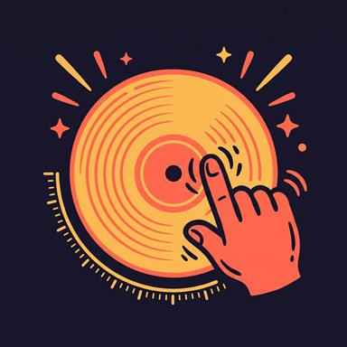
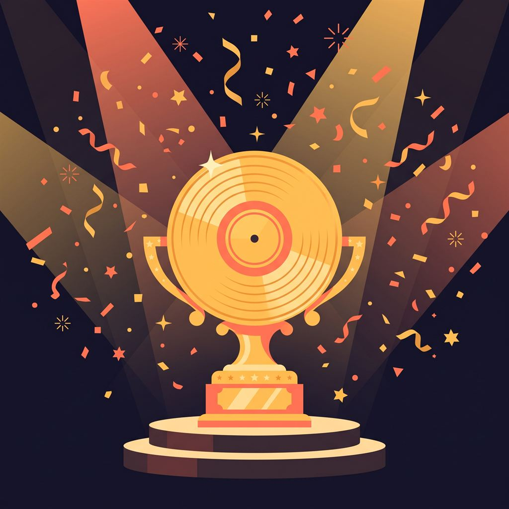

Pick My Music
Posłuchaj. Zgadnij, kiedy to wyszło. Ułóż swoją oś czasu.
Nowa gra
Zasady
Każdy gracz (albo drużyna) zaczyna z jedną odkrytą kartą. W swojej turze słuchasz fragmentu piosenki i wybierasz miejsce na swojej osi czasu: przed, po albo między kartami, które już masz. Trafisz — karta zostaje u ciebie. Pomylisz się — przepada. Wygrywa ten, kto pierwszy zbierze ustaloną liczbę kart.
Tryb z żetonami. Każdy zaczyna z 2 żetonami (najwyżej 5). Jeśli przed odsłonięciem powiesz na głos tytuł i wykonawcę i trafisz — dostajesz żeton. Żetony wydajesz tak:
- 1 żeton — pominięcie utworu, którego nie chcesz układać;
- 1 żeton — przejęcie: gdy rywal wybierze miejsce, wskazujesz inne na jego osi. Jeśli on się myli, a ty masz rację, karta trafia do ciebie;
- 3 żetony — kupno karty: obecny utwór od razu trafia na twoją oś we właściwe miejsce.
Przy remisie w kartach wygrywa ten, kto ma więcej żetonów. Dodatkowy żeton dostaje ten, kto przed zatwierdzeniem wpisze rok co do joty.
Czas na turę. Gdy czas minie, wybrane miejsce zostaje zatwierdzone. Bez wybranego miejsca karta przepada.
Tryb łatwy. Wystarczy trafić dekadę: utwór z 1983 można położyć zarówno przed, jak i za kartą z 1987. Na płycie widać rozmytą okładkę jako podpowiedź.
Klawiatura i pilot TV. Spacja odtwarza, strzałki ← → wybierają miejsce, Enter zatwierdza albo przechodzi dalej, M włącza i wyłącza dźwięki.
Zainstaluj jak aplikację
Na iPhonie otwórz grę w Safari, stuknij Udostępnij, a potem Do ekranu początkowego. Na Androidzie w Chrome: menu ⋮ → Zainstaluj aplikację. Gra otworzy się na pełnym ekranie, z własną ikoną.
Statystyki (0)
Zgłoszone błędne lata (0)
Utwory zgłoszone przyciskiem „Zły rok?” w czasie gry. Gra już ich nie losuje w tej przeglądarce. Skopiuj listę i wyślij ją autorowi talii, żeby poprawić ją dla wszystkich.
Tworzę talię
Oś czasu
Kliknij szczelinę, w którą pasuje utwór.Klawiatura i pilot: Spacja odtwórz · ← → wybierz miejsce · Enter zatwierdź / dalej · M dźwięki
